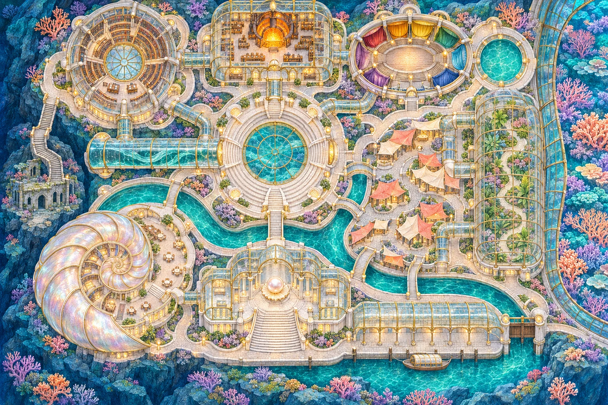

Тайна Лунной Жемчужины
Карты и фигурки ведущего
Игровой комплект
4 игрока · 3 игрока · основной состав · 3 игрока, без героя «Торен Риф» · 3 игрока, без героя «Лея Скат» · 3 игрока, без героя «Амалия Морева»
Карта кампании

Карты и фигурки ведущего
4 игрока · 3 игрока · основной состав · 3 игрока, без героя «Торен Риф» · 3 игрока, без героя «Лея Скат» · 3 игрока, без героя «Амалия Морева»
